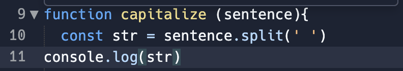
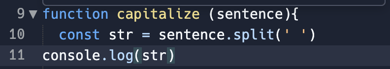
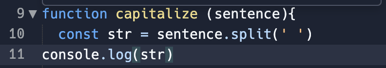

Can you see the problem?
Give it a space!!
Can you see the problem?
Give it a space!!
One day, I was blocked on a simple problem, or so it seems. I was trying to solve the capitalize problem. I read the question carefully, console.logging, try to read the error messages. I googled 'change first letter to upper case in string array', I looked up on Discord for posts with the same problem but I couldn't get to the bottom of it! I was feeling frustrated and getting pretty worked up. Eventually, I asked for help.
Can you see the problem?
Give it a space!!
On the same day, I also solved a problem, not sure I would call it elegantly. I did use one of the problem solving techniques.
I think I understood JavaScript objects literals well so I find manipulating javascript objects question reasonably straight foward.
I did get a bit stuck with step 3: Add a spouse key to terah and assign it the value of adam. I first did
 , subsequently learnt
declaring and assigning are two distinctly different entities. When I got rid of the "let" it still was not working.
Again I read the error message and realised I overcomplicate the question and clicked that it is the object adam,
not the value 'Adam'. Coding could be frustrating and satisfying at the same time.
, subsequently learnt
declaring and assigning are two distinctly different entities. When I got rid of the "let" it still was not working.
Again I read the error message and realised I overcomplicate the question and clicked that it is the object adam,
not the value 'Adam'. Coding could be frustrating and satisfying at the same time.
At this stage of my learning, I mostly follow the order below:
A version of this, I read the question out loud and write the keywords down on paper. I will have to research more on how to do this better.
This would be one of my first go to, although I find it is not easy. Particularly for beginners in coding. I find I could easily fall into a rabbit hole. I trust it will get better when I have better grasp of the coding languages.
The advice I got on the web about Pseudocode is using non-technical terms. Breaking down the problem into small parts, a single line of pseudocode for each parts of the problem. Keep it simple but specific. It sounds easy but often missed the mark of achieveing what they are supposed to do. I think practice writing pseudocode with programmer who are experience in the coding language would potentially help.
I try not to jump into trying to solve a problem too soon. At this stage, it is a bit of a hit or miss exercise. I think being able to use the next 2 steps well, would help the hit rate with trying something.
I am only just getting the concept of this after talking to a facilitator fourth week into Foundations. I would consider it an essential tool.
Error messages consist of the error and the stack trace. The error messages are usually the part where it is useful for googling. The stack trace consist of where the codes/ functions you are in on the left, and where the codes live on the right. The important message I got is to learn to read the error messages would be very helpful in narrowing down what to google. Another tip, look for keywords, words that are not repeating often, get to know phrases that are common with errors so you do not google that. If the message is short enough, copy and paste the whole error to google.
This is my favourite, I think boucing ideas off each other is the best way of solving a problem.